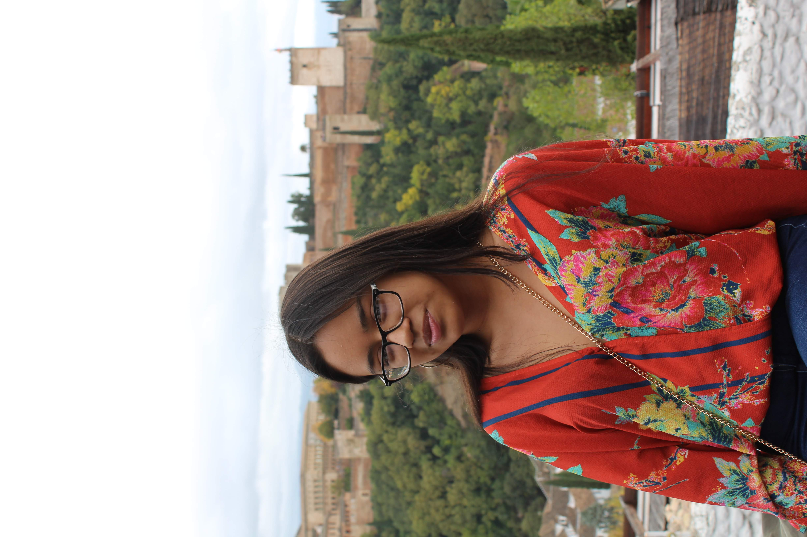
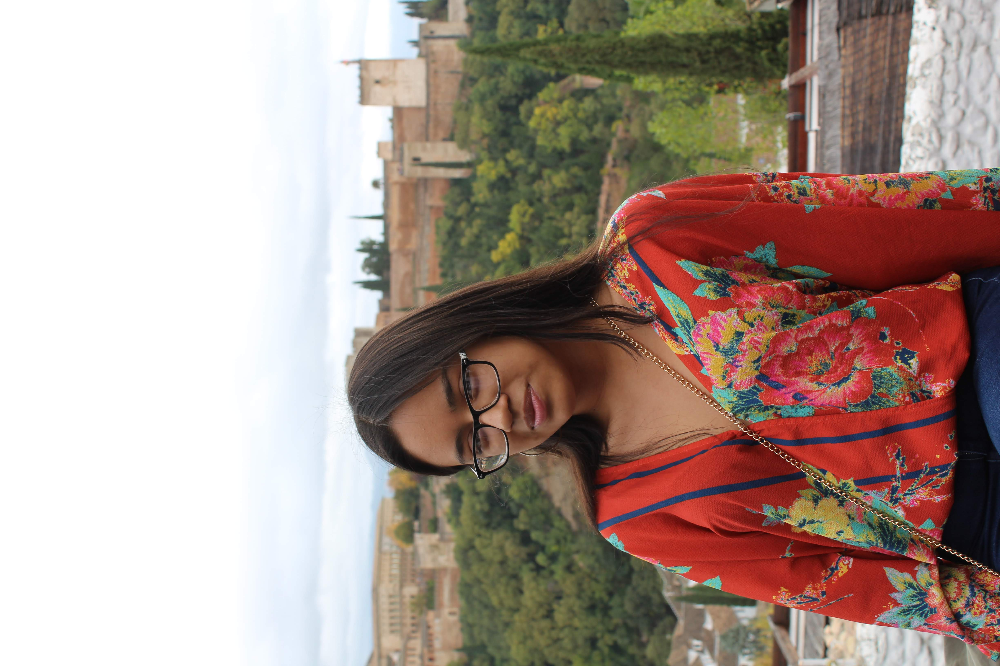

Madrid, Cuanto Te Extraño:
When asked what my favorite thing about studying abroad in Madrid, Spain was, I think back to our many walking tours across the city as a part of the program the school did to incentivize us to explore. One of my favorite things about exploring Madrid and other parts of Spain was my ability to walk through history. Walking through the Plaza del Dos de Mayo made me realize history was no longer just something I read about in textbooks or lectured on in class; it was something I was observing for myself. Plaza del Dos de Mayo marked the commencement of the Spanish War of Independence. In my Understanding 20th Century Spain class, we talked about the beginning of the war and where it happened. Therefore, I could make connections between what I was learning and the places I was going, which was amazing... Read more about what I miss from Madrid